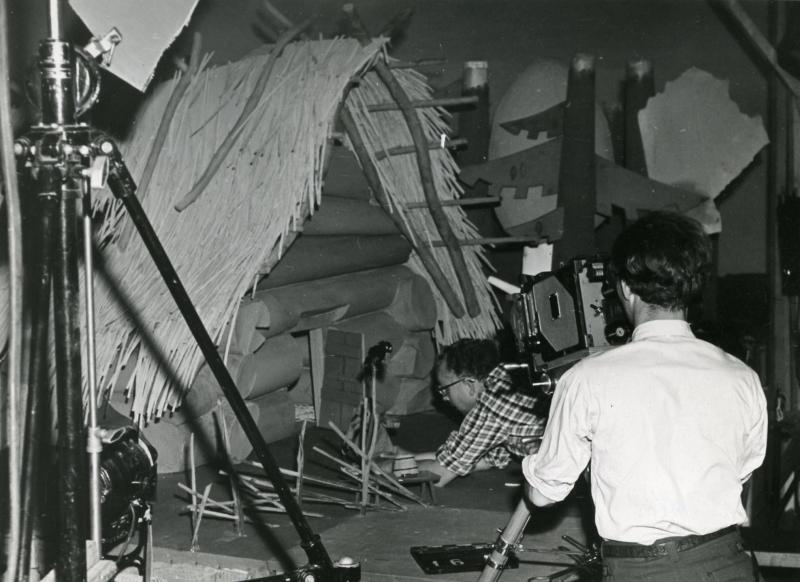
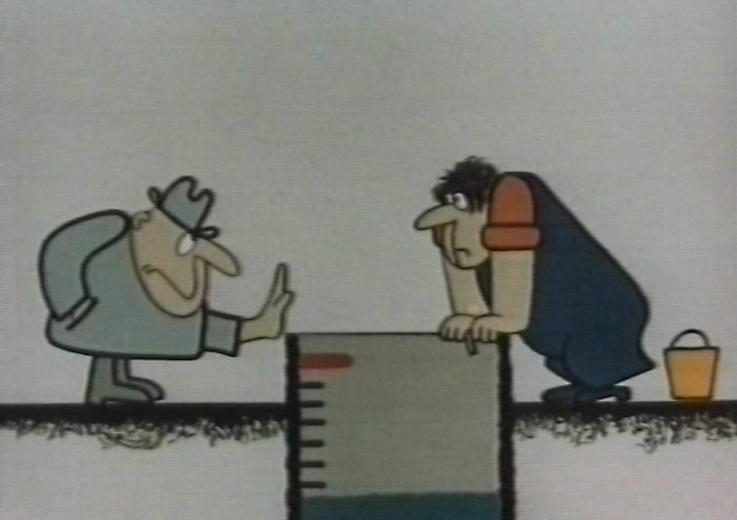
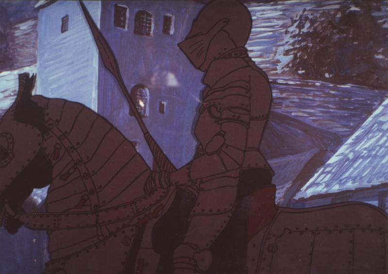
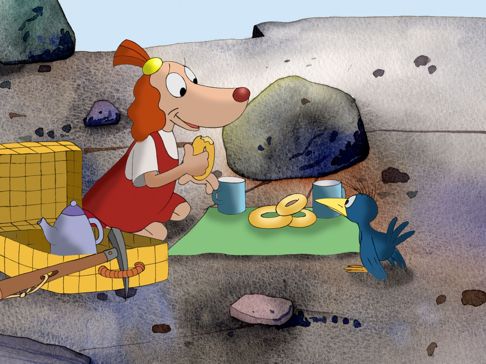

1931
Eesti animafilmikunst sai alguse 1930ndatel, kui tehti esimesed eksperimentaalsed animafilmid. Sellest ajast on säilinud vaid üks lühianimafilm: "Kutsu-Juku seiklusi". Režissöör oli Voldemar Päts, produtsent Aleksander Teppor ja joonistaja karikaturist Elmar Jaanimägi.
Filmi valmistati 1930 a jooksul Aleksander Teppori fotostuudios Tallinnas Suur-Karja 9 ja peamiselt Eesti Karskusseltsi toetusel. Kokku tehti 5000 joonistust ja filmilindi pikkus oli 180 meetrit ehk 6 minutit. Sellest on säilinud u 100 meetrine lõik kestusega 4 minutit. Lõplikult valmis film alles 17. aprilliks 1931, etendudes esmalt Tallinnas kinos "Modern" ja seejärel Tartus kinos "Capitol" 7. novembril. Film oli algselt mõeldud välja lasta seriaalina. Valmistati ette ka 2. osa pealkirjaga "Juku seiklused maal ja veel", mis ei saanud aga valmis ning ei ole ka säilinud. Edasisele tootmistegevusele sai paljuski saatuslikuks alanud majanduskriis, aga küllap ka tootmisraskused, sest keerukate joonisfilmide kvaliteetne tootmine oli sel ajal jõukohane pigem suurriikidele.
1940. a peitis Aleksander Teppor filmi koopia okupatsioonivõimude eest Tartusse Eesti Karskusseltsi arhiivi ja see avastati Tartus Eesti Ajalooarhiivist 1986. a.
2001. a toimus filmi restaureerimine Eesti Filmi Sihtasutuse poolt.
30. novembril 2001. a avati Tallinnas Suur-Karja 9 ees kõnniteel mälestusplaat filmile ja filmi tootjaile.1958
Alates ülemaailmsest majanduskriisist kuni 1958. aastani Eesti animafilmikunstis arengut ei toimunud. Animafilmikunsti taassünd oli 1958, kui Elbert Tuganov asutas filmistuudio "Tallinnfilm" juurde nukufilmi osakonna. 1958 valmis nukufilmi osakonnas esimene animafilm: "Peetrikese unenägu".
Film on tehtud taani kirjaniku Jens Sigsgaardi muinasjutu "Palle üksi maailmas" ainetel.
Digitaalselt taastatud 2014. a.
1960
Kolmas nukufilm, "Metsamuinasjutt" tõi filmifestivalil Bukarestis 1960. aastal esimese rahvusvahelise auhinna eesti filmikunstile. Filmi režissöör on Elbert Tuganov. Film on tehtud Oskar Lutsu jutustuse "Nukitsamees" ainetel.
1961
"Ott kosmoses" on Eesti NSV 1961. aasta animafilm (nukufilm). Filmi režissöör on Elbert Tuganov. Filmi tootis Tallinnfilm. Digitaalselt taastatud 2009. a.
Filmi tegemine oli ajendatud sellest, et Nõukogude kosmonaut Juri Gagarin käis 1961. aastal esimese inimesena kosmoses.
Film pälvis 1963. aastal Deauville'i rahvusvahelisel astronautika- ja kosmosefilmide festivalil eriauhinna.
1971
Peale Elbert Tuganovi, kes tegi 38 animafilmi (viimane 1981. a.), oli üks veel tuntumaid nukufilmilavastajaid Heino Pars, kelle käe all valmis aastail 1962–1990 kokku 31 filmi. Tema tuntuimad filmid on "Operaator Kõps seeneriigis", "Operaator Kõps marjariigis", "Operaator Kõps kiviriigis" ja "Operaator Kõps üksikul saarel", "Nael", "Putukate suvemängud", "Mardileib", "Kunksmoor", "Kunksmoor ja kapten Trumm", "Välek Vibulane" ja "Meemeistrite linn".
1972
Esimese nukufilmi kunstnik Rein Raamat asutas 1971. a. Tallinnfilmi juurde joonisfilmistuudio, oli selle juht ja lavastaja. Raamatu joonisfilmid on sügavalt metafoorsed ja eesti folkloorist tõukuvad. Nad püüavad pilku piinlikult täpse joonistuslaadi, filosoofiliste teemade ja huumori puudumisega.
Esimene joonisfilm oli "Veekandja" (1972). Rahvusvahelise tunnustuseni jõuab eesti joonisfilm Raamatu filmiga "Lend" (1973). Raamatu kaalukamateks töödeks kujunevad eesti folkloori aineline muinasvägilasest pajatav "Suur Tõll" (1980).
Kaader joonisfilmist "Veekandja"
1977
Rahvusvaheliselt tuntuim ja pärjatuim eesti filmitegija on Priit Pärn. Karikaturistina alustanud Pärna filmid on tulvil kõige ettearvamatuid, kummaliselt paradokslevaid metamorfoose. Priit Pärna stiilile on omane mäng ruumi ja kujunditega ning eriline joonekäsitlus. Tema filmid räägivad ühiskonnast, ajaloost, kultuurist, ka tema oma eluloost läbi iseloomuliku huumoriprisma. Pärna huumor on keerukas, mitmeplaaniline ja absurdimaiguline. 1977. aastal valmis tema esimene autorifilm "Kas maakera on ümmargune?". Pärna enim auhinnatud filmid on "Eine murul" (1987) ja "1895" (koos Janno Põldmaga).
1984
Avo Paistik oli eesti karikaturist, joonisfilmide režissöör, maalikunstnik ja pastor. Töötas Tallinnfilmis 1971–1990 heliosakonna inseneri, kunstnik-lavastaja ja režissöörina. Filme kutsus tegema teda Rein Raamat. Avo Paistiku animafilm "Naksitrallid I" ilmus 1984. a.
1991
1991. aastal nukufilmiüksus eraldus filmistuudiost Tallinnfilm ja sai nime OÜ Nukufilm. See on Eestis ainus ja Ida- ning Põhja-Euroopas üks suurimaid ja vanimaid nukufilmide tootmisele spetsialiseerunud stuudioid - seda nii paviljoni pindalalt, tootmise ja tehniliste vahendite poolest kui ka töötajate arvult.
1994
1994. aastal iseseisvub "Tallinnfilmi" senine joonisfilmigrupp stuudioks Eesti Joonisfilm. Lisaks Priit Pärnale ilmestavad stuudio loomingulist palet Mati Küti julgelt eksperimenteeriva lahendusega tööd, Heiki Ernitsa ja Janno Põldma tõsinaljakad lood nii lastele kui täiskasvanutele. Noortest tegijatest on lisandunud Priit Tender, Ülo Pikkov ja Kaspar Jancis.Üks esimestest joonisfilmidest oli "Tallinna legendid"
Kaader joonisfilmist "Tallinna legendid"
2000
Lisaks autorifilmidele on stuudios "Eesti Joonisfilm" valminud kaks lastele mõeldud joonisfilmi seriaali: "Tom ja Fluffy" (1997) ning "Lotte" (autorid Janno Põldma ja Heiki Ernits) ning tellimustöödena reklaamklippe.
Kaader joonisfilmist "Lotte reis Lõunamaale" (2000)
2003
Üks auhinnatutest nukufilmidest, mis oli tehtud OÜ Nukufilmis, on "Instinkt", mille režissöör ja stsenarist on Rao Heidmets ning kunstnik on Navitrolla.
2014
Eesti Joonisfilmi poolt tehtud joonisfilm "Alateadvuse maja" võitis 2015. a. Hollandi Animafilmide Festivalil Utrechtis Grand Prix lühifilmide kategoorias ning Rahvusvahelisel Lühifilmide Festivalil Nijmegenis (Holland) peaauhinna animafilmide kategoorias.